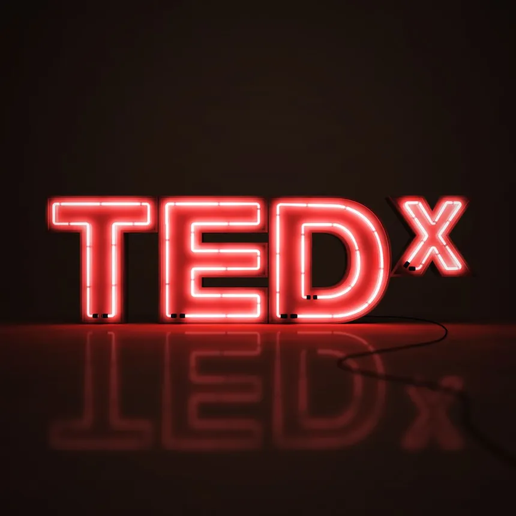

What is TEDX talks ?
TEDx talks focus on sharing ideas worth spreading. They can cover a wide range of topics, including science, art, personal stories, and social issues. The aim is to inspire, educate, and provoke thought. Speakers share their insights, research, or experiences to engage and inform the audience. Talks are designed to resonate with the audience, sparking discussions and encouraging viewers to think critically about the topics presented.
